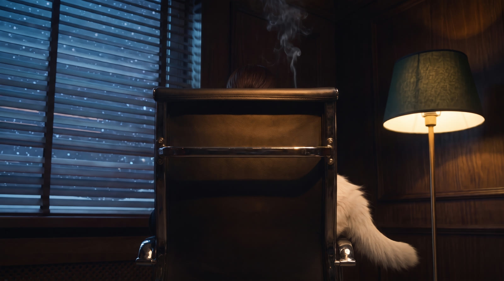
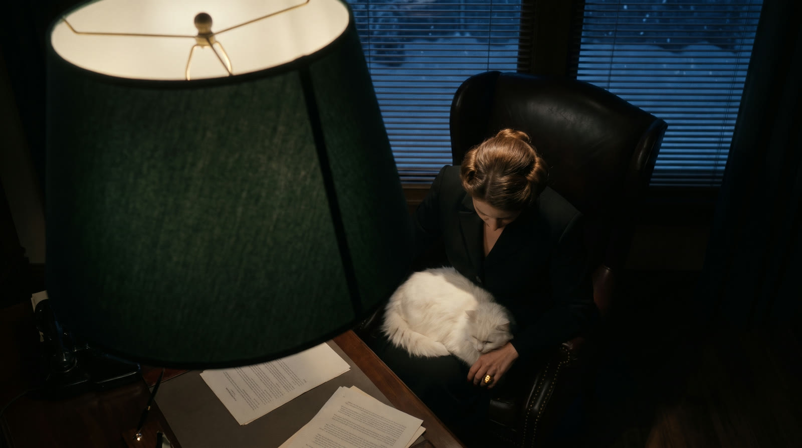
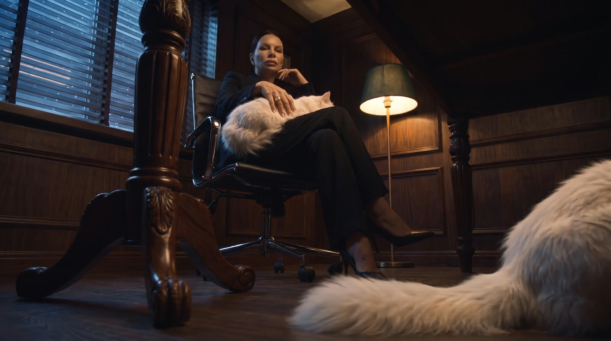
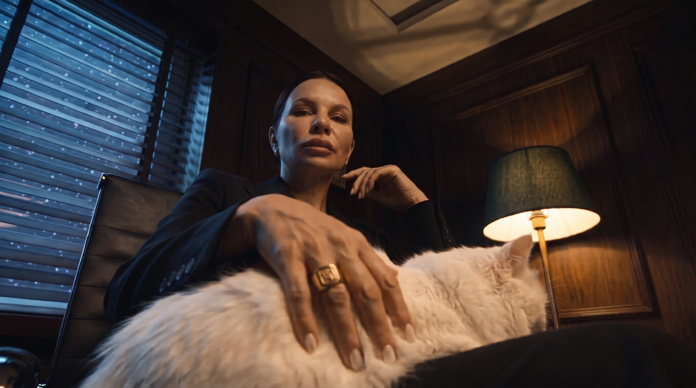

Появление Насти (кадр на 0:26): 3 варианта
Сейчас: камера отъезжает от руки на коте, Настя сидит прямо на стуле. Новое: она в кожаном кресле, как в своём ответе снизу. 8 с, $0,3. Без слов, мурчание и тиканье часов.
Вариант 1: кресло поворачивается (я за него)
Спинка кресла к нам, над ней дымок, свисает хвост кота. Кресло медленно разворачивается, и мы видим её.

Вариант 2: камера с потолка
Сверху над абажуром камера опускается и разворачивается, открывая её в кресле.

Вариант 3: камера по полу
Низко вдоль ножек стола, мимо хвоста кота, потом поднимается к ней снизу.

Конец для всех трёх
Она в кресле лицом к камере, чуть снизу, смотрит в объектив.
